Research¶
Below is a showcase of papers which have used PySR to discover or rediscover a symbolic model. These are sorted by the date of release, with most recent papers at the top.
If you have used PySR in your research, please submit a pull request to add your paper to this file.

Analytical formulae for design of one-dimensional sonic crystals with smooth geometry based on symbolic regression ¶
1Czech Technical University in Prague, Faculty of Electrical Engineering
Abstract: Even though locally periodic structures have been studied for more than three decades, the known analytical expressions relating the waveguide geometry and the acoustic transmission are limited to a few special cases. Having an access to numerical model is a great opportunity for data-driven discovery. Our choice of cubic splines to parametrize the waveguide unit cell geometry offers enough variability for waveguide design. Using Webster equation for unit cell and Floquet–Bloch theory for periodic structures, a dataset of numerical solutions was prepared. Employing the methods of physics-informed machine learning, we have extracted analytical formulae relating the waveguide geometry and the corresponding dispersion relation or directly the bandgap widths. The results contribute to the overall readability of the system and enable a deeper understanding of the underlying principles. Specifically, it allows for assessing the influence of the waveguide geometry, offering more efficient alternative to computationally demanding numerical optimization.

SymbolFit: Automatic Parametric Modeling with Symbolic Regression ¶
1University of Pennsylvania, 2European Organization for Nuclear Research (CERN), 3University of Cambridge, 4University of Wisconsin-Madison, 5University of California San Diego, 6Massachusetts Institute of Technology, 7Institute for Artificial Intelligence and Fundamental Interactions, 8Institute of Physics Belgrade
Abstract: We introduce SymbolFit, a framework that automates parametric modeling by using symbolic regression to perform a machine-search for functions that fit the data, while simultaneously providing uncertainty estimates in a single run. Traditionally, constructing a parametric model to accurately describe binned data has been a manual and iterative process, requiring an adequate functional form to be determined before the fit can be performed. The main challenge arises when the appropriate functional forms cannot be derived from first principles, especially when there is no underlying true closed-form function for the distribution. In this work, we address this problem by utilizing symbolic regression, a machine learning technique that explores a vast space of candidate functions without needing a predefined functional form, treating the functional form itself as a trainable parameter. Our approach is demonstrated in data analysis applications in high-energy physics experiments at the CERN Large Hadron Collider (LHC). We demonstrate its effectiveness and efficiency using five real proton-proton collision datasets from new physics searches at the LHC, namely the background modeling in resonance searches for high-mass dijet, trijet, paired-dijet, diphoton, and dimuon events. We also validate the framework using several toy datasets with one and more variables.

The automated discovery of kinetic rate models – methodological frameworks ¶
1Imperial College London, 2University of Manchester
Abstract: The industrialization of catalytic processes requires reliable kinetic models for their design, optimization and control. Mechanistic models require significant domain knowledge, while data-driven and hybrid models lack interpretability. Automated knowledge discovery methods, such as ALAMO (Automated Learning of Algebraic Models for Optimization), SINDy (Sparse Identification of Nonlinear Dynamics), and genetic programming, have gained popularity but suffer from limitations such as needing model structure assumptions, exhibiting poor scalability, and displaying sensitivity to noise. To overcome these challenges, we propose two methodological frameworks, ADoK-S and ADoK-W (Automated Discovery of Kinetic rate models using a Strong/Weak formulation of symbolic regression), for the automated generation of catalytic kinetic models using a robust criterion for model selection. We leverage genetic programming for model generation and a sequential optimization routine for model refinement. The frameworks are tested against three case studies of increasing complexity, demonstrating their ability to retrieve the underlying kinetic rate model with limited noisy data from the catalytic systems, showcasing their potential for chemical reaction engineering applications.

Discovering interpretable models of scientific image data with deep learning ¶
1The Alan Turing Institute, 2University College London
Abstract: How can we find interpretable, domain-appropriate models of natural phenomena given some complex, raw data such as images? Can we use such models to derive scientific insight from the data? In this paper, we propose some methods for achieving this. In particular, we implement disentangled representation learning, sparse deep neural network training and symbolic regression, and assess their usefulness in forming interpretable models of complex image data. We demonstrate their relevance to the field of bioimaging using a well-studied test problem of classifying cell states in microscopy data. We find that such methods can produce highly parsimonious models that achieve ~98% of the accuracy of black-box benchmark models, with a tiny fraction of the complexity. We explore the utility of such interpretable models in producing scientific explanations of the underlying biological phenomenon.
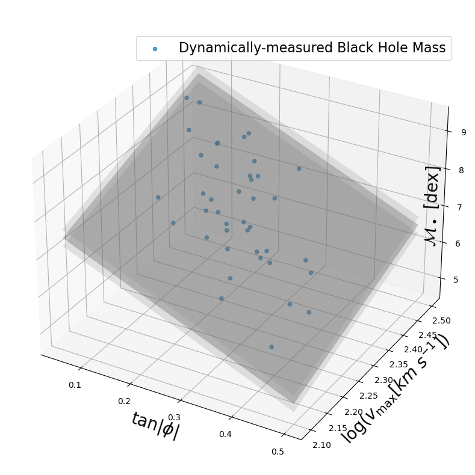
Discovery of a Planar Black Hole Mass Scaling Relation for Spiral Galaxies ¶
1Center for Astrophysics and Space Science, New York University Abu Dhabi
Abstract: Supermassive black holes (SMBHs) are tiny in comparison to the galaxies they inhabit, yet they manage to influence and coevolve along with their hosts. Evidence of this mutual development is observed in the structure and dynamics of galaxies and their correlations with black hole mass (\(M_\bullet\)). For our study, we focus on relative parameters that are unique to only disk galaxies. As such, we quantify the structure of spiral galaxies via their logarithmic spiral-arm pitch angles (\(\phi\)) and their dynamics through the maximum rotational velocities of their galactic disks (\(v_\mathrm{max}\)). In the past, we have studied black hole mass scaling relations between \(M_\bullet\) and \(\phi\) or \(v_\mathrm{max}\), separately. Now, we combine the three parameters into a trivariate \(M_\bullet\)--\(\phi\)--\(v_\mathrm{max}\) relationship that yields best-in-class accuracy in prediction of black hole masses in spiral galaxies. Because most black hole mass scaling relations have been created from samples of the largest SMBHs within the most massive galaxies, they lack certainty when extrapolated to low-mass spiral galaxies. Thus, it is difficult to confidently use existing scaling relations when trying to identify galaxies that might harbor the elusive class of intermediate-mass black holes (IMBHs). Therefore, we offer our novel relationship as an ideal predictor to search for IMBHs and probe the low-mass end of the black hole mass function by utilizing spiral galaxies. Already with rotational velocities widely available for a large population of galaxies and pitch angles readily measurable from uncalibrated images, we expect that the \(M_\bullet\)--\(\phi\)--\(v_\mathrm{max}\) fundamental plane will be a useful tool for estimating black hole masses, even at high redshifts.
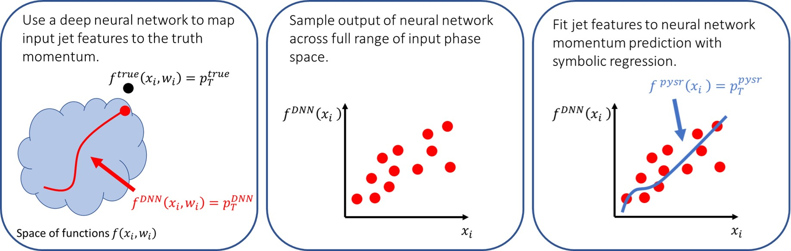
Interpretable machine learning methods applied to jet background subtraction in heavy-ion collisions ¶
1University of Tennessee, Knoxville, 2Iowa State University of Science and Technology
Abstract: Jet measurements in heavy ion collisions can provide constraints on the properties of the quark gluon plasma, but the kinematic reach is limited by a large, fluctuating background. We present a novel application of symbolic regression to extract a functional representation of a deep neural network trained to subtract background from jets in heavy ion collisions. We show that the deep neural network is approximately the same as a method using the particle multiplicity in a jet. This demonstrates that interpretable machine learning methods can provide insight into underlying physical processes.
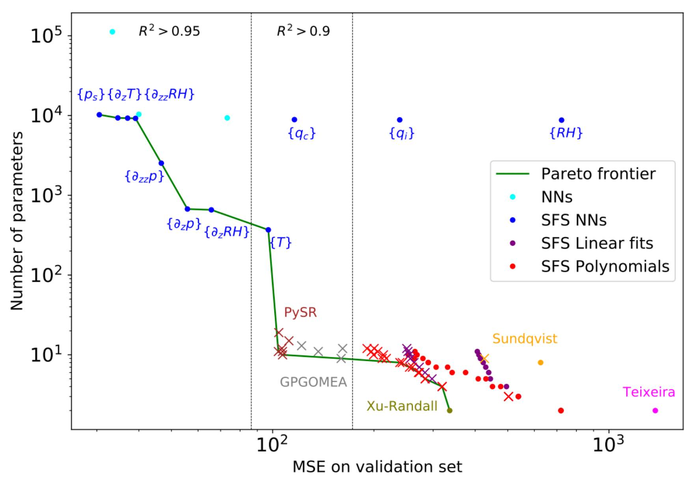
Data-Driven Equation Discovery of a Cloud Cover Parameterization ¶
1Institut für Physik der Atmosphäre, Deutsches Zentrum für Luft- und Raumfahrt, 2Center for Learning the Earth with Artificial Intelligence And Physics, Columbia University, 3Institute of Earth Surface Dynamics, University of Lausanne, 4Institute of Environmental Physics, University of Bremen
Abstract: A promising method for improving the representation of clouds in climate models, and hence climate projections, is to develop machine learning-based parameterizations using output from global storm-resolving models. While neural networks can achieve state-of-the-art performance, they are typically climate model-specific, require post-hoc tools for interpretation, and struggle to predict outside of their training distribution. To avoid these limitations, we combine symbolic regression, sequential feature selection, and physical constraints in a hierarchical modeling framework. This framework allows us to discover new equations diagnosing cloud cover from coarse-grained variables of global storm-resolving model simulations. These analytical equations are interpretable by construction and easily transferable to other grids or climate models. Our best equation balances performance and complexity, achieving a performance comparable to that of neural networks (\(R^2=0.94\)) while remaining simple (with only 13 trainable parameters). It reproduces cloud cover distributions more accurately than the Xu-Randall scheme across all cloud regimes (Hellinger distances \(<0.09\)), and matches neural networks in condensate-rich regimes. When applied and fine-tuned to the ERA5 reanalysis, the equation exhibits superior transferability to new data compared to all other optimal cloud cover schemes. Our findings demonstrate the effectiveness of symbolic regression in discovering interpretable, physically-consistent, and nonlinear equations to parameterize cloud cover.
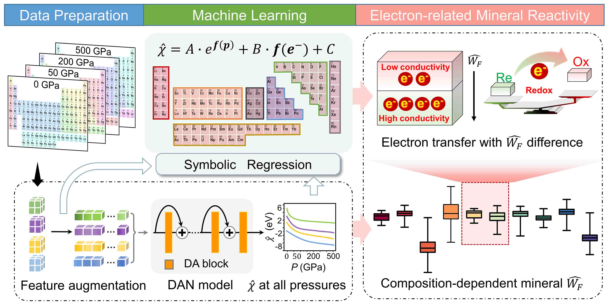
Electron Transfer Rules of Minerals under Pressure informed by Machine Learning ¶
1Peking University, 2Beihang University
Abstract: Electron transfer is the most elementary process in nature, but the existing electron transfer rules are seldom applied to high-pressure situations, such as in the deep Earth. Here we show a deep learning model to obtain the electronegativity of 96 elements under arbitrary pressure, and a regressed unified formula to quantify its relationship with pressure and electronic configuration. The relative work function of minerals is further predicted by electronegativity, presenting a decreasing trend with pressure because of pressure-induced electron delocalization. Using the work function as the case study of electronegativity, it reveals that the driving force behind directional electron transfer results from the enlarged work function difference between compounds with pressure. This well explains the deep high-conductivity anomalies, and helps discover the redox reactivity between widespread Fe(II)-bearing minerals and water during ongoing subduction. Our results give an insight into the fundamental physicochemical properties of elements and their compounds under pressure
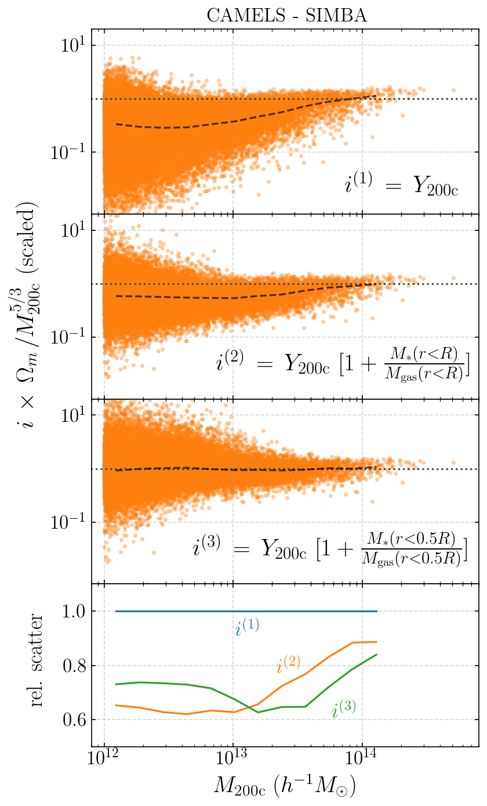
The SZ flux-mass (Y-M) relation at low halo masses: improvements with symbolic regression and strong constraints on baryonic feedback ¶
1Institute for Advanced Study, 2Princeton University, 3Columbia University, 4University of Pennsylvania, 5Flatiron Institute, 6Yale University, 7University of Connecticut, 8Harvard University
Abstract: Ionized gas in the halo circumgalactic medium leaves an imprint on the cosmic microwave background via the thermal Sunyaev-Zeldovich (tSZ) effect. Feedback from active galactic nuclei (AGN) and supernovae can affect the measurements of the integrated tSZ flux of halos (\(Y_{SZ}\)) and cause its relation with the halo mass (\(Y_{SZ}-M\)) to deviate from the self-similar power-law prediction of the virial theorem. We perform a comprehensive study of such deviations using CAMELS, a suite of hydrodynamic simulations with extensive variations in feedback prescriptions. We use a combination of two machine learning tools (random forest and symbolic regression) to search for analogues of the \(Y-M\) relation which are more robust to feedback processes for low masses (\(M \leq 10^{14} M_{\odot}/h\)); we find that simply replacing \(Y \rightarrow Y(1+M_\ast/M_{\text{gas}})\) in the relation makes it remarkably self-similar. This could serve as a robust multiwavelength mass proxy for low-mass clusters and galaxy groups. Our methodology can also be generally useful to improve the domain of validity of other astrophysical scaling relations. We also forecast that measurements of the Y-M relation could provide percent-level constraints on certain combinations of feedback parameters and/or rule out a major part of the parameter space of supernova and AGN feedback models used in current state-of-the-art hydrodynamic simulations. Our results can be useful for using upcoming SZ surveys (e.g. SO, CMB-S4) and galaxy surveys (e.g. DESI and Rubin) to constrain the nature of baryonic feedback. Finally, we find that the an alternative relation, \(Y-M_{\ast}\), provides complementary information on feedback than \(Y-M\).
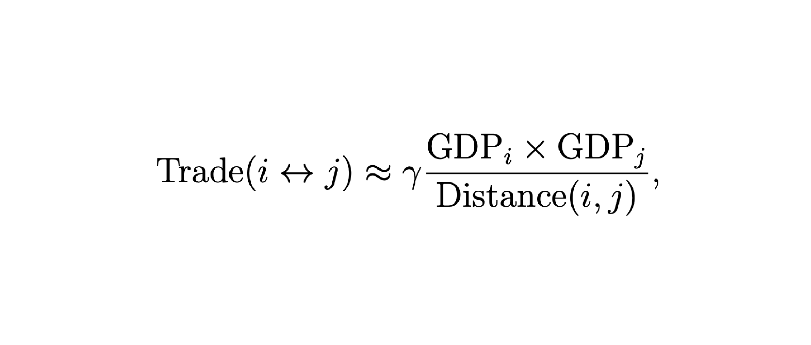
Machine Learning the Gravity Equation for International Trade ¶
1Harvard University
Abstract: Machine learning (ML) is becoming more and more important throughout the mathematical and theoretical sciences. In this work we apply modern ML methods to gravity models of pairwise interactions in international economics. We explain the formulation of graphical neural networks (GNNs), models for graph-structured data that respect the properties of exchangeability and locality. GNNs are a natural and theoretically appealing class of models for international trade, which we demonstrate empirically by fitting them to a large panel of annual-frequency country-level data. We then use a symbolic regression algorithm to turn our fits into interpretable models with performance comparable to state of the art hand-crafted models motivated by economic theory. The resulting symbolic models contain objects resembling market access functions, which were developed in modern structural literature, but in our analysis arise ab initio without being explicitly postulated. Along the way, we also produce several model-consistent and model-agnostic ML-based measures of bilateral trade accessibility.
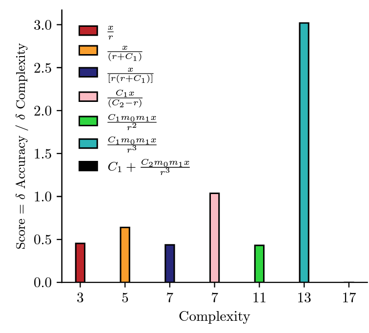
Rediscovering orbital mechanics with machine learning ¶
1University of Sussex, 2University College London, 3ENS, 4Princeton University, 5Flatiron Institute, 6Carnegie Mellon University, 7New York University, 8DeepMind
Abstract: We present an approach for using machine learning to automatically discover the governing equations and hidden properties of real physical systems from observations. We train a "graph neural network" to simulate the dynamics of our solar system's Sun, planets, and large moons from 30 years of trajectory data. We then use symbolic regression to discover an analytical expression for the force law implicitly learned by the neural network, which our results showed is equivalent to Newton's law of gravitation. The key assumptions that were required were translational and rotational equivariance, and Newton's second and third laws of motion. Our approach correctly discovered the form of the symbolic force law. Furthermore, our approach did not require any assumptions about the masses of planets and moons or physical constants. They, too, were accurately inferred through our methods. Though, of course, the classical law of gravitation has been known since Isaac Newton, our result serves as a validation that our method can discover unknown laws and hidden properties from observed data. More broadly this work represents a key step toward realizing the potential of machine learning for accelerating scientific discovery.
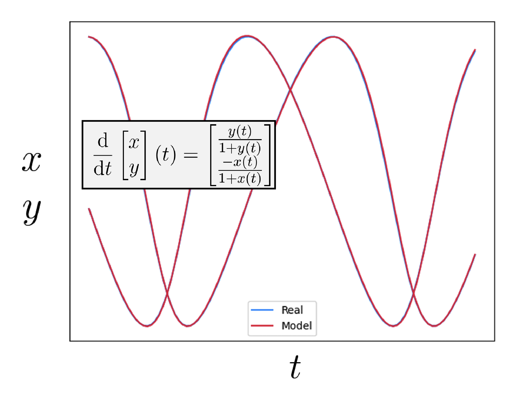
(Thesis) On Neural Differential Equations - Section 6.1 ¶
1University of Oxford
Abstract: The conjoining of dynamical systems and deep learning has become a topic of great interest. In particular, neural differential equations (NDEs) demonstrate that neural networks and differential equation are two sides of the same coin. Traditional parameterised differential equations are a special case. Many popular neural network architectures, such as residual networks and recurrent networks, are discretisations. NDEs are suitable for tackling generative problems, dynamical systems, and time series (particularly in physics, finance, ...) and are thus of interest to both modern machine learning and traditional mathematical modelling. NDEs offer high-capacity function approximation, strong priors on model space, the ability to handle irregular data, memory efficiency, and a wealth of available theory on both sides. This doctoral thesis provides an in-depth survey of the field. Topics include: neural ordinary differential equations (e.g. for hybrid neural/mechanistic modelling of physical systems); neural controlled differential equations (e.g. for learning functions of irregular time series); and neural stochastic differential equations (e.g. to produce generative models capable of representing complex stochastic dynamics, or sampling from complex high-dimensional distributions). Further topics include: numerical methods for NDEs (e.g. reversible differential equations solvers, backpropagation through differential equations, Brownian reconstruction); symbolic regression for dynamical systems (e.g. via regularised evolution); and deep implicit models (e.g. deep equilibrium models, differentiable optimisation). We anticipate this thesis will be of interest to anyone interested in the marriage of deep learning with dynamical systems, and hope it will provide a useful reference for the current state of the art.
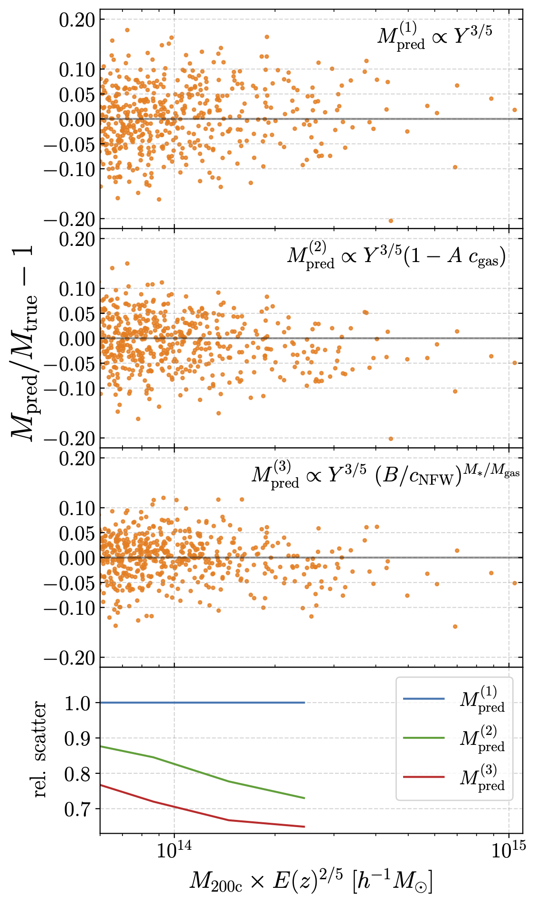
Augmenting astrophysical scaling relations with machine learning: application to reducing the SZ flux-mass scatter ¶
1Institute for Advanced Study, 2Princeton University, 3Flatiron Institute, 4Columbia University, 5Cornell University, 6University of Connecticut, 7Harvard University
Abstract: Complex systems (stars, supernovae, galaxies, and clusters) often exhibit low scatter relations between observable properties (e.g., luminosity, velocity dispersion, oscillation period, temperature). These scaling relations can illuminate the underlying physics and can provide observational tools for estimating masses and distances. Machine learning can provide a fast and systematic way to search for new scaling relations (or for simple extensions to existing relations) in abstract high-dimensional parameter spaces. We use a machine learning tool called symbolic regression (SR), which models the patterns in a given dataset in the form of analytic equations. We focus on the Sunyaev-Zeldovich flux-cluster mass relation (Y-M), the scatter in which affects inference of cosmological parameters from cluster abundance data. Using SR on the data from the IllustrisTNG hydrodynamical simulation, we find a new proxy for cluster mass which combines \(Y_{SZ}\) and concentration of ionized gas (cgas): \(M \propto Y_{\text{conc}}^{3/5} \equiv Y_{SZ}^{3/5} (1 - A c_\text{gas})\). Yconc reduces the scatter in the predicted M by ~ 20 - 30% for large clusters (\(M > 10^{14} M_{\odot}/h\)) at both high and low redshifts, as compared to using just \(Y_{SZ}\). We show that the dependence on cgas is linked to cores of clusters exhibiting larger scatter than their outskirts. Finally, we test Yconc on clusters from simulations of the CAMELS project and show that Yconc is robust against variations in cosmology, astrophysics, subgrid physics, and cosmic variance. Our results and methodology can be useful for accurate multiwavelength cluster mass estimation from current and upcoming CMB and X-ray surveys like ACT, SO, SPT, eROSITA and CMB-S4.
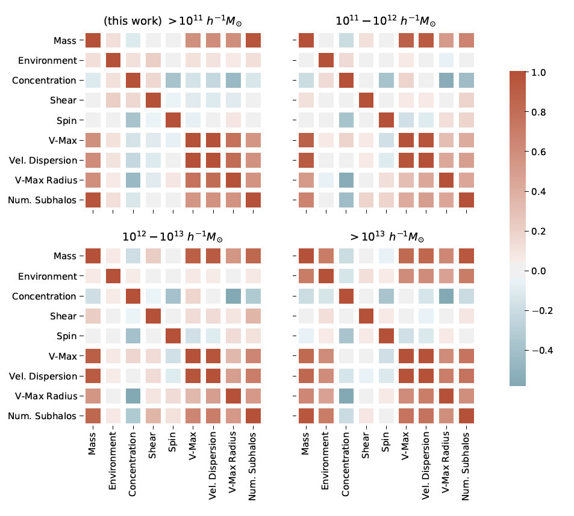
Modeling the galaxy-halo connection with machine learning ¶
1Center for Astrophysics | Harvard & Smithsonian, 2New York University, 3Institute for Advanced Study, 4Flatiron Institute, 5Princeton University, 6Carnegie Mellon University, 7Durham University
Abstract: To extract information from the clustering of galaxies on non-linear scales, we need to model the connection between galaxies and halos accurately and in a flexible manner. Standard halo occupation distribution (HOD) models make the assumption that the galaxy occupation in a halo is a function of only its mass, however, in reality, the occupation can depend on various other parameters including halo concentration, assembly history, environment, spin, etc. Using the IllustrisTNG hydrodynamic simulation as our target, we show that machine learning tools can be used to capture this high-dimensional dependence and provide more accurate galaxy occupation models. Specifically, we use a random forest regressor to identify which secondary halo parameters best model the galaxy-halo connection and symbolic regression to augment the standard HOD model with simple equations capturing the dependence on those parameters, namely the local environmental overdensity and shear, at the location of a halo. This not only provides insights into the galaxy-formation relationship but, more importantly, improves the clustering statistics of the modeled galaxies significantly. Our approach demonstrates that machine learning tools can help us better understand and model the galaxy-halo connection, and are therefore useful for galaxy formation and cosmology studies from upcoming galaxy surveys.
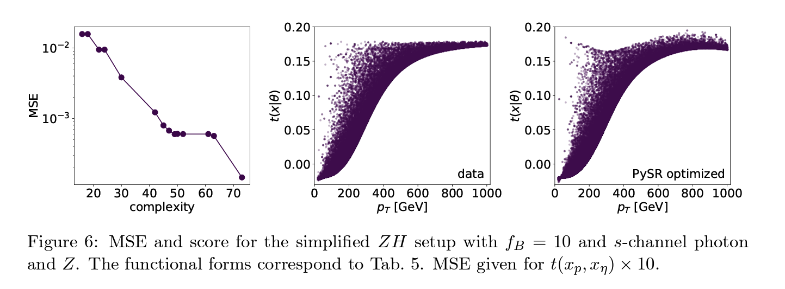
Back to the Formula -- LHC Edition ¶
1Institut fur Theoretische Physik, Universitat Heidelberg, 2Center for Data Science, New York University
Abstract: While neural networks offer an attractive way to numerically encode functions, actual formulas remain the language of theoretical particle physics. We show how symbolic regression trained on matrix-element information provides, for instance, optimal LHC observables in an easily interpretable form. We introduce the method using the effect of a dimension-6 coefficient on associated ZH production. We then validate it for the known case of CP-violation in weak-boson-fusion Higgs production, including detector effects.
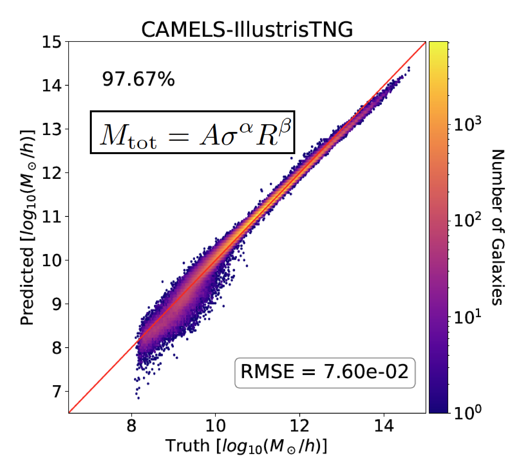
Finding universal relations in subhalo properties with artificial intelligence ¶
1Princeton University, 2Flatiron Institute, 3Columbia University, 4University of Connecticut, 5Center for Astrophysics | Harvard & Smithsonian, 6University of Edinburgh, 7University of the Western Cape, 8South African Astronomical Observatories, 9University of Florida, 10University of Florida Informatics Institute, 11MIT
Abstract: We use a generic formalism designed to search for relations in high-dimensional spaces to determine if the total mass of a subhalo can be predicted from other internal properties such as velocity dispersion, radius, or star-formation rate. We train neural networks using data from the Cosmology and Astrophysics with MachinE Learning Simulations (CAMELS) project and show that the model can predict the total mass of a subhalo with high accuracy: more than 99% of the subhalos have a predicted mass within 0.2 dex of their true value. The networks exhibit surprising extrapolation properties, being able to accurately predict the total mass of any type of subhalo containing any kind of galaxy at any redshift from simulations with different cosmologies, astrophysics models, subgrid physics, volumes, and resolutions, indicating that the network may have found a universal relation. We then use different methods to find equations that approximate the relation found by the networks and derive new analytic expressions that predict the total mass of a subhalo from its radius, velocity dispersion, and maximum circular velocity. We show that in some regimes, the analytic expressions are more accurate than the neural networks. We interpret the relation found by the neural network and approximated by the analytic equation as being connected to the virial theorem.
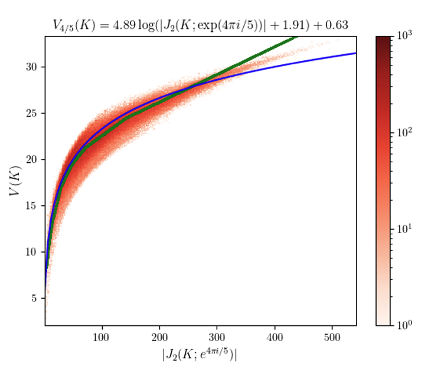
Disentangling a deep learned volume formula ¶
1University of the Witwatersrand, 2University of British Columbia
Abstract: We present a simple phenomenological formula which approximates the hyperbolic volume of a knot using only a single evaluation of its Jones polynomial at a root of unity. The average error is just 2.86% on the first 1.7 million knots, which represents a large improvement over previous formulas of this kind. To find the approximation formula, we use layer-wise relevance propagation to reverse engineer a black box neural network which achieves a similar average error for the same approximation task when trained on 10% of the total dataset. The particular roots of unity which appear in our analysis cannot be written as e2πi/(k+2) with integer k; therefore, the relevant Jones polynomial evaluations are not given by unknot-normalized expectation values of Wilson loop operators in conventional SU(2) Chern-Simons theory with level k. Instead, they correspond to an analytic continuation of such expectation values to fractional level. We briefly review the continuation procedure and comment on the presence of certain Lefschetz thimbles, to which our approximation formula is sensitive, in the analytically continued Chern-Simons integration cycle.
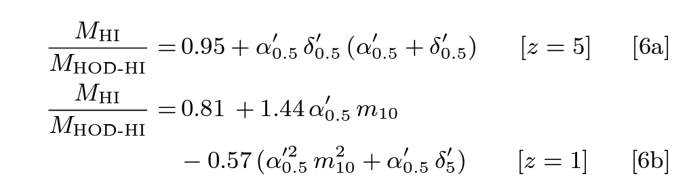
Modeling assembly bias with machine learning and symbolic regression ¶
1New York University, 2Princeton University, 3Flatiron Institute, 4Carnegie Mellon University, 5Université de Montréal, 6Mila
Abstract: Upcoming 21cm surveys will map the spatial distribution of cosmic neutral hydrogen (HI) over unprecedented volumes. Mock catalogues are needed to fully exploit the potential of these surveys. Standard techniques employed to create these mock catalogs, like Halo Occupation Distribution (HOD), rely on assumptions such as the baryonic properties of dark matter halos only depend on their masses. In this work, we use the state-of-the-art magneto-hydrodynamic simulation IllustrisTNG to show that the HI content of halos exhibits a strong dependence on their local environment. We then use machine learning techniques to show that this effect can be 1) modeled by these algorithms and 2) parametrized in the form of novel analytic equations. We provide physical explanations for this environmental effect and show that ignoring it leads to underprediction of the real-space 21-cm power spectrum at k≳0.05 h/Mpc by ≳10%, which is larger than the expected precision from upcoming surveys on such large scales. Our methodology of combining numerical simulations with machine learning techniques is general, and opens a new direction at modeling and parametrizing the complex physics of assembly bias needed to generate accurate mocks for galaxy and line intensity mapping surveys.